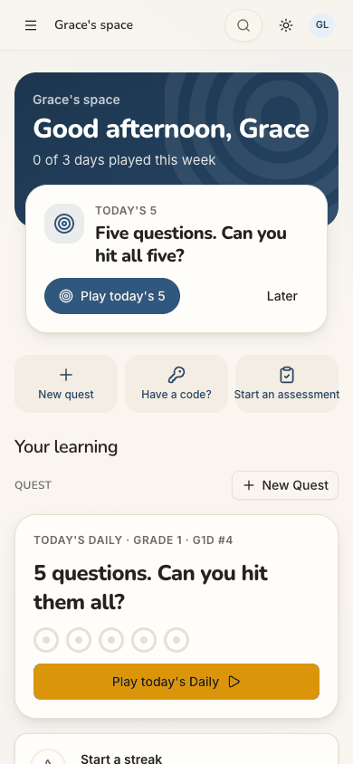
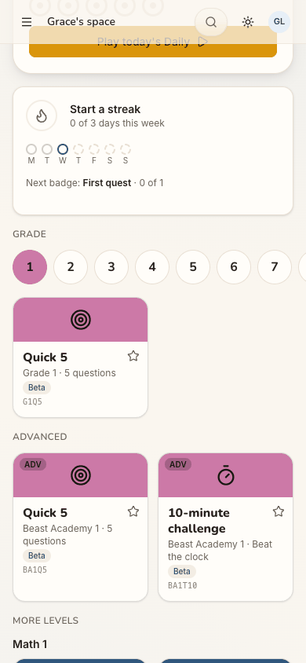
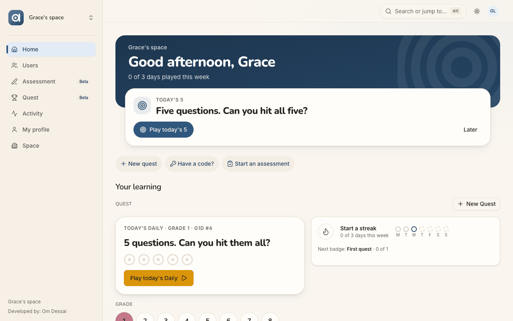
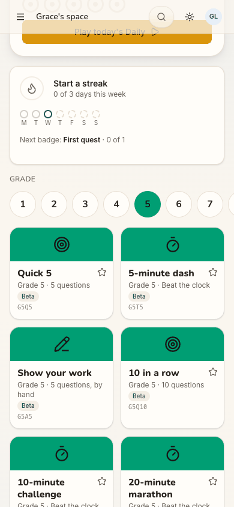
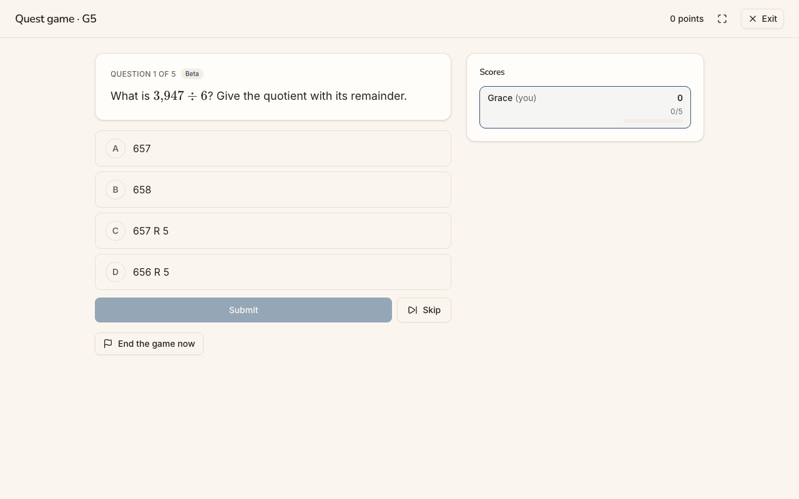
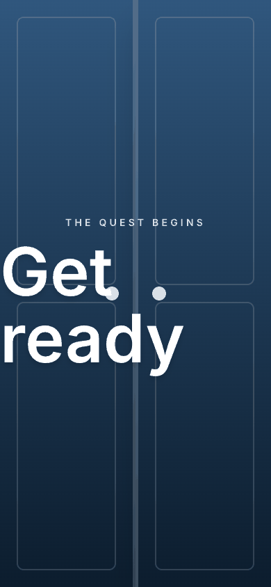
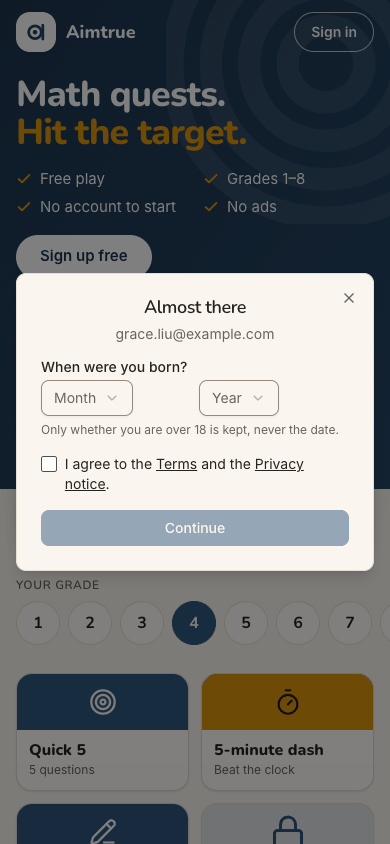
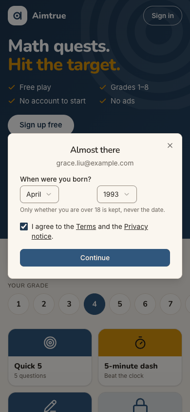
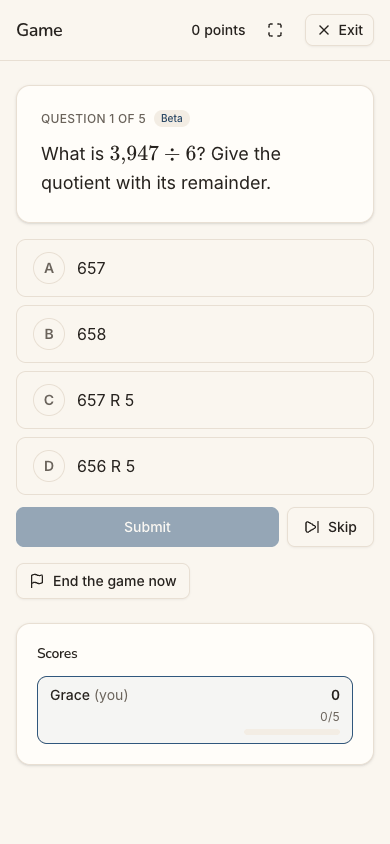

Who: Grace Liu, 33 (born April 1993), a teacher whose school is in the pilot. Her email, grace.liu@example.com, is on the platform's sign-up list. Before she brings Aimtrue to her class, she wants to try the quests herself, so here she plays: cohort C6, the Quest player ("Let me play.") in docs/member-home-plan.md. She arrives signed out on the guest page, on a phone. Sign-up access is Pre-approved: only people on the list may sign up.
Outcome: 1/1 journeys passed, 0 skipped, 11 of 11 steps verified. The list did what it should, invisibly. Grace tapped "Sign up free" and Continue with Google. She gave her birth month and year and ticked the terms. One more tap put her straight into the home of "Grace's space" (step 6), with no waiting screen, in about a second. She picked grade 5 (the grade she teaches, a persona detail for this run) and tapped Quick 5. After a short countdown, question 1 of 5 was on screen (step 10), and it was still there after a reload (step 11).
Conversion figures (counted from the entry point, the signed-out guest page):
Stretch
Screens
Taps
Inputs
Waits
Dead ends
Entry to inside her space (steps 1-6)
4
4
0 typed, 2 dropdowns, 1 checkbox (counted in taps)
0 (each step under about a second)
0
Home to question 1 (steps 6-10)
2 more
2 (+1 scroll)
0
1 (the countdown, under 4 s)
0
Whole journey
6
6 (+1 scroll)
0 typed, 2 dropdowns
one countdown
0
This is the shortest sign-up of the audit's journeys: six taps and no typing from a stranger's first screen to a question in her own space. Taking the home's "Play today's 5" would have saved the scroll and a tap, but that card does not say which grade it plays. Grace wanted grade 5, and the board had opened on grade 1.
For conversion, Pre-approved works for the person on the list. Compare J01, where the same sign-up under Post-approved ends on "Waiting for approval". For stickiness, the gap is what comes after. Nothing says she was recognised from the list, and nothing speaks to a teacher. The home calls itself "Your learning", in a space of one. The first number she reads is a zero, and the board opens on a grade with a single quest.
The 3 screens Grace would notice most:
Step 6, the first screen inside the space. She is in at once, and the greeting is personal: the relief this
cohort needs. But she is alone in "Grace's space", under "Your learning". The page has no word about the pilot, her school or her pupils, and "0 of 3 days played this week" is its first fact. "Today's 5" and "Today's Daily" look like two challenges.

step 6
Step 7, the board. The page chose grade 1 for her, while the guest page a minute earlier had shown grade 4. Grade 1
has one quest on this data, where grade 5 has six. A teacher sizing the product up for her class could read it as thin.

step 7
Step 10, question 1. A proper grade-5 question (3,947 ÷ 6, with a remainder) with a sensible set of choices: the
thing she came for. Still, the header says only "Game", never "Quick 5", and the question carries an unexplained "Beta".
In at once, but nothing says she is in, or what a pilot teacher does next
Issue
Under Pre-approved, the list check is silent from start to finish. The "Sign up free" sheet (step 2) and the "Almost there" step (step 3) look the same as for anyone. After Continue (step 6), Grace lands straight on the home of a personal space, "Grace's space", with no "You're in", no welcome and no tour (the tour is Tutoring's by design). Nothing names the pilot or her school, or says why she was let straight in. The home frames her as a learner: "Your learning", "Start a streak", "Next badge: First quest". Its quick actions are New quest, Have a code? and Start an assessment. The code box's hint, "Six characters join a game; eight ask to join a space.", is the only mention of other spaces, and Grace has no code. The desktop menu lists Users and Space, but the home does not point a teacher there, and on the phone the menu sits behind ☰.
Violation
cuj-contract, step 6 (expected: straight in, and oriented; observed: straight in, with no sign that the list let her in and no next step for her role); Nielsen #1 Visibility of system status; Nielsen #2 Match between system and the real world (a teacher shown a learner's page).
Severity
Classify: real friction, not a block. The journey's end was reached with no workaround. But a pilot
teacher's reason to come back is her class. The first screen gives her nothing that leads towards her pupils or her school's space, so the pilot's sign-up converts into one person playing alone. That is weaker stickiness than the list's effort deserves.
Evidence
step 6

step 6 desktop Repro: set sign-up access to Pre-approved, with the persona's email on the list. Signed out at /, tap "Sign up free", then Continue with Google. Pick a birth month and year, tick the terms box, tap Continue: the home appears with no welcome.
Fix
Show a one-time line on the first home after a pre-approved sign-up: "You're in. Your email was on the pilot list." Let the platform admin attach a short note, or a space to join, to a list entry, so a school's teachers land with "Join <school>'s space" or "Bring your class: Invite people" as their Next up. Whether a list entry may carry a space is the owner's decision. Until then, offer adults in a personal space a first-week checklist (the member-home plan's "What can I do here?" row): play a quest, invite someone, join with a code.
sev2
The board opens on Grade 1, with one quest, after the guest page showed Grade 4
Issue
The guest page preselects grade 4 (step 1). Inside the space, a minute later, the board and the Daily default to grade 1: "TODAY'S DAILY · GRADE 1 · G1D #4" (step 6), and the Grade row has 1 selected (step 7). On this run's data grade 1 offers a single tile, Quick 5 (G1Q5); grade 5 offers six (step 8). The Next up card, "Today's 5", names no grade, so Grace cannot tell what its primary button would play. To reach her class's grade she scrolled past the Daily and the streak card and changed grade: one scroll and one tap.
Violation
cuj-contract, steps 6-7 (expected: quests for a grade she recognises; observed: grade 1, with one quest); Nielsen #4 Consistency and standards (grade 4 outside, grade 1 inside); Nielsen #1 Visibility of system status (Next up does not say its grade).
Severity
Classify: an observable mismatch and real friction on the first screen. A newcomer who did not play
as a guest gets no grade carried over, so every Pre-approved arrival who signs up first sees this. For a teacher sizing the product up, a board with one quest reads as thin.
Evidence
step 1step 7

step 8 Repro: sign up as a newcomer without playing a guest tile. On the home, scroll to "Grade": 1 is selected, with one tile. The number of tiles depends on the bank's playable counts per level (this run's local data).
Fix
Default the member board to the same grade the guest page uses, or ask once ("Which grade are you playing, or teaching?") and remember it. Name the grade on Next up ("Today's 5 · Grade 4"), with the grade chips beside it. A sparse level should not be the default: pick the nearest grade with a full set of tiles.
sev2
The first screen offers the same daily twice, under two names, and leads with a zero
Issue
As in J01, the home's Next up card reads "TODAY'S 5 / Five questions. Can you hit all five?" with "Play today's 5". The card below it reads "TODAY'S DAILY · GRADE 1 · G1D #4 / 5 questions. Can you hit them all?" with "Play today's Daily". "New quest" (quick action) and "+ New Quest" (beside QUEST) sit a few centimetres apart. The band's first fact is "0 of 3 days played this week", repeated by the streak card, seconds after Grace joined.
Violation
cuj-contract, step 6 (expected: one clear first move; observed: two names for one challenge, and a zero as the welcome); Nielsen #4 Consistency and standards; Nielsen #8 Aesthetic and minimalist design.
Severity
Classify: an observable mismatch on the screen that most decides whether a newcomer comes back.
"Let me play" deserves one obvious button. A zero is the wrong first number for a person who has not had a day to play yet.
Evidence
step 6 Repro: as above, the home right after sign-up. The same finding is in J01 (step 13), so it does not depend on the approval mode.
Fix
Use one name, "Today's 5" or "the Daily", everywhere. When Next up is the Daily, do not repeat its card under QUEST: show only the rings and the streak there. Keep one "New quest". On a member's first day, replace "0 of 3 days played this week" with "Play 3 days a week to start a streak".
sev1
Codes and Beta labels where a teacher looks for names
Issue
Every tile shows its internal code (G1Q5, BA1T10, G5Q5, G5T5...) and a "Beta" pill (steps 7, 8). The game Grace started from "Quick 5" is headed "Game" on the phone and "Quest game · G5" on desktop (step 10). The tile's name never appears. Question 1 carries "Beta" too, with nothing to say whether the question, the game or the site is in beta.
Violation
cuj-contract, steps 7, 8 and 10 (expected: things named as she chose them; observed: codes); Nielsen #2 Match between system and the real world; Nielsen #10 Help and documentation ("Beta" unexplained).
Severity
Classify: cosmetic; every label can be worked out. For a teacher deciding whether to put these
questions in front of pupils, an unexplained "Beta" on every one raises a doubt about their quality.
Evidence
step 8step 10

step 10 desktop Repro: on the home pick grade 5, read the tiles, tap Quick 5 and read the game header.
Fix
Head the game with the tile's name and grade ("Quick 5 · Grade 5") at every width. Move tile codes to a tooltip or the share sheet. Make "Beta" tappable: "A new question, checked by our software; tell us if something looks wrong".
sev1
On a phone the countdown heading runs to the left edge of the screen
Issue
In the full-screen countdown after tapping Quick 5 (step 9), the large "Get ready" starts at the screen's left edge, with no margin, and its last letter sits under the doors' handle dots. J19 noted the same at phone width.
Violation
cuj-contract, step 9 (expected: a countdown inside the page's layout; observed: text at the edge); Nielsen #8 Aesthetic and minimalist design.
Severity
Classify: cosmetic, a moment on screen. It is the first frame of the feature, the "this is a game"
moment, so a ragged edge is noticed.
Evidence

step 9 Repro: at 390×844, start any quest tile and capture the countdown.
Fix
Give the countdown heading the page's 16 px gutter and scale its size with the viewport (clamp()), so "Get ready" fits between the margins on a 360-390 px phone. Keep the handle dots clear of the text.
Walkthrough
Step 1 — Open http://localhost:8797/ signed out (landing) Expected: the guest page, with a way to sign up. Observed: match. "Math quests. Hit the target." with ticks for Free play, Grades 1–8, No account to start and No ads; "Sign up free" above "Save your scores and unlock every quest."; "Today's 5 · Grade 4"; the grade row with 4 preselected (8 off the right edge on the phone); grade-4 tiles, three open and three marked "Free account". "Sign in" top right. Desktop puts Today's 5 beside the hero; dark mode is readable.Step 2 — Tap "Sign up free" Expected: a way to sign up. Observed: match. A centred dialog: "Sign up free / Keep your scores, unlock every quest and play with your family." and one button, Continue with Google.

Step 3 — Tap "Continue with Google" (landing) Expected (on the list): past the list check to the "about you" step. Observed: match, at once. "Almost there" with grace.liu@example.com, "When were you born?" (Month, Year), "Only whether you are over 18 is kept, never the date.", the terms box and a disabled Continue.Step 4 — Choose April and 1993 Expected: the date accepted. Observed: match. April / 1993 shown; Continue stays disabled until the box is ticked.

Step 5 — Tick "I agree to the Terms and the Privacy notice." Expected: Continue enabled. Observed: match. It turns dark blue.Step 6 — Tap Continue: straight into "Grace's space" (landing) Expected (Pre-approved, on the list): straight in, with no waiting. Observed: match, in about a second. The home of "Grace's space": "Good afternoon, Grace", "0 of 3 days played this week". Next up shows "TODAY'S 5" (Play today's 5, Later), then the quick actions New quest, Have a code? and Start an assessment (its label fills the card edge to edge). Below sit "Your learning", QUEST with "+ New Quest", and "TODAY'S DAILY · GRADE 1 · G1D #4" with "Play today's Daily". Further down (read from the page): the streak card, the Grade row, Advanced and More levels, a "Have a code?" box, Start an assessment, "No assessments yet." and "Make this my home". Desktop adds the menu (Home, Users, Assessment Beta, Quest Beta, Activity, My profile, Space). There is no welcome and no tour; the only console error is the signed-out 401 at the first page load.Step 7 — Scroll down to the Grade row Expected: quests for a grade she recognises. Observed: the streak card ("Start a streak · 0 of 3 days this week", the day dots, "Next badge: First quest · 0 of 1"), then the Grade row with 1 selected in pink. Grade 1 has one tile, "Quick 5 · Grade 1 · 5 questions · Beta · G1Q5". Advanced has two Beast Academy 1 tiles; More levels begins with Math 1.Step 8 — Tap grade 5 Expected: grade-5 quests. Observed: match. 5 selected (green); six tiles: Quick 5 (G5Q5), 5-minute dash, Show your work, 10 in a row, 10-minute challenge and 20-minute marathon, each with a star and "Beta". The Daily card above followed the choice ("TODAY'S DAILY · GRADE 5 · G5D #4", read from the page text).Step 9 — Tap "Quick 5" (Grade 5) Expected: the quest starts. Observed: one tap made the game (/quest/games/<id>) and opened a full-screen countdown: two doors, "THE QUEST BEGINS / Get ready". On the phone "Get ready" starts at the screen's left edge, under the doors' handles.Step 10 — The countdown ends: question 1 (landing) Expected: the quest's first question. Observed: match, under 4 s after the tap. Header "Game" (phone) or "Quest game · G5" (desktop), "0 points", full screen and Exit. "QUESTION 1 OF 5 · Beta: What is 3,947 ÷ 6? Give the quotient with its remainder.", with the choices 657, 658, 657 R 5 and 656 R 5. Submit (disabled until a choice), Skip, End the game now, and Scores "Grace (you) 0, 0/5". The shading on choice D in the phone capture is the pointer resting where the tile was tapped, not a selection; it is gone after the reload (step 11).

Step 11 — Reload the game (end-state check) Expected: the started quest survives a refresh. Observed: match. The same game URL, "QUESTION 1 OF 5", the same question and choices, 0/5, and no console errors.
1 / 11
Appendix
Mode: live. The web app at http://localhost:8797 is a frozen copy of commit 2d6e7d3 with sign-in on, driven
in headless Chrome at 390×844 (phone), plus 1280×800 and dark mode at the landing steps (1, 3, 6, 10). One stage, one browser profile.
Frameworks applied: cuj-contract (every step against its expected result); task-completion (the journey ran to
its defined end, a quest's first question in Grace's own space); success-criteria (the end state checked again after a reload at step 11).
CUJ manifest: J12, 11 steps, all verified. Two driver misses (a scroll by text that did not move the page, and
a grade tapped as a button where it is a radio) were retried at once and are not counted as the persona's.
Coverage / not inspected:
The list entry itself, and the console where it was made: the admin agent added Grace's email (outside this
journey). Whether it was an exact email or a pattern was not seen.
The Terms and Privacy pages' content (not opened).
Answering question 1 and the rest of the quest; "Play today's 5" on Next up (which grade it plays was not
checked); the Daily; favorites' stars; "Make this my home".
"Start an assessment" on the home (its Student list was not opened), the "Have a code?" box, the desktop menu's
pages (Users, Space, Activity, My profile), the phone's ☰ menu and the account menu: whether a teacher can invite pupils from her personal space was not tried.
Any email to Grace (none is expected under Pre-approved; no mailbox was available).
Keyboard-only and screen-reader use; the accessibility tree was read only to find controls.
The iOS app; it is covered by separate journeys.
Other sign-in providers (the production web offers Google only), and a person not on the list (J13).
Access: through the app's real sign-in and sign-up screens; the Google provider step is simulated (a stand-in for
Google's button hands the app a local test token for the persona).
Preconditions made outside the UI: none by this journey. Just before it, the platform admin agent switched
sign-up access to Pre-approved and put grace.liu@example.com on the list, through the console (status log, 18:11 UTC). The run's other settings (web sign-in Google only with sign-up open, guest play and the Daily on) are as docs/userjourney/README.md "The run" records.